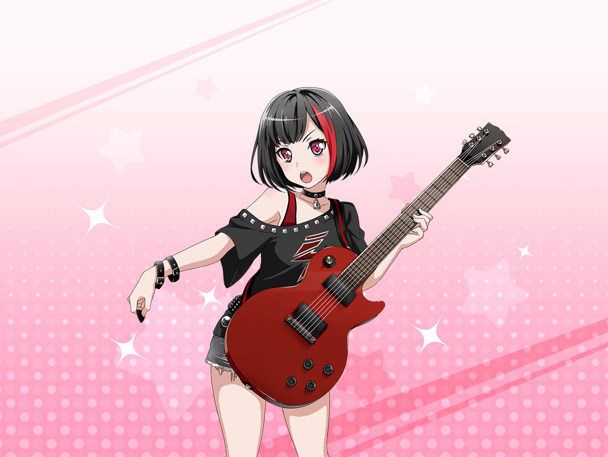

蘭
……お待たせ
巴
お！ やっと出てき……
巴
……おお
蘭
なに？
巴
いや、予想以上に似合ってるなって
巴
この色のバランスと、アクセサリーの感じ。
やっぱり、蘭のイメージにぴったりだったな
蘭
そうかな……
あたしは正直、全然落ち着かない
蘭
肩……こんなにあいてるし
巴
ぷっ、ふふふ、あっはっはっはっ！！
蘭
な、なに笑ってんの？
巴
もしかして蘭、
それを気にして着替えるのに時間がかかったのか？
蘭
……べ、別にそういうわけじゃないけど！
巴
……ま、たしかに普段着よりスースーするかもしれないけど、
大丈夫だって
蘭
……
巴
本当に似合うって思ってるから言ってるんだぞ？
その衣装、蘭の雰囲気にぴったりだ
蘭
……あたしの雰囲気？
巴
静かだけど、内に燃えさかる情熱があるって感じ？
巴
蘭って普段はクールだけどさ、
ステージに上がると、すごくアツくなるだろ？
巴
自分の想いを、感情を歌に乗せて、
情熱と共に観客に伝える……
巴
蘭の、そんなクールでアツい感じを、
その衣装ならガッツリ表現できると思ったんだ
巴
だから、アタシとひまりは、それを選んだ
蘭
クールでアツイ……
巴
それに蘭は、自分では気づいてないかもしれないけど……
蘭
ああもう、わかったってば！
恥ずかしいから、もういいよ……
巴
ははっ。はいはい。
ま、でも、蘭が気に入ってくれてるなら嬉しいな。
どうなんだ？
蘭
まあ……悪く、ない……かな
巴
……ん。気に入ってもらえて何より。
それじゃ、練習をはじめるとするか。
みんな、待ってる
巴
着てる服が違ったとしても、アタシ達は……
蘭
『いつも通り』でしょ。行こう
巴
……ああ。行こう